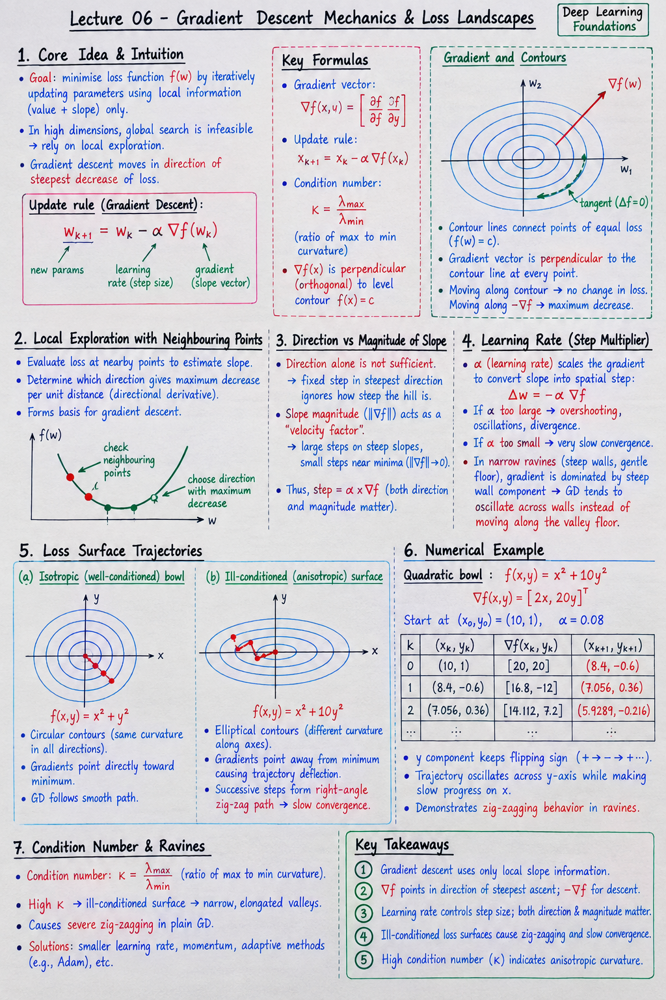

Executive Summary & Formula Sheet
Core Concept: Gradient descent navigates complex high-dimensional loss landscapes using only local slope information. The gradient vector \(\nabla f(\mathbf{x})\) always points perpendicular (orthogonal) to level contour curves in the direction of steepest ascent. Ravines with ill-conditioned curvature cause plain GD to oscillate wildly across steep walls rather than moving along the shallow valley floor.
- Gradient Vector: \(\nabla f(x, y) = \left[ \frac{\partial f}{\partial x}, \frac{\partial f}{\partial y} \right]^T\)
- Steepest Descent Rule: xk+1 = xk - α ∇f(xk)
- Contour Orthogonality: \(\nabla f(\mathbf{x})\) is perpendicular to the tangent of \(f(\mathbf{x}) = c\)
- Condition Number: Ratio of max to min curvature \(\kappa = \frac{\lambda_{\max}}{\lambda_{\min}}\); high \(\kappa\) causes severe zig-zagging.
Handwritten Short Notes

Click image to open high-resolution version in new tab
1. Starting Point & Local Exploration
1.1 Why Local Information Guides Search
In high dimensions, evaluating the loss surface globally is computationally impossible. Optimization algorithms must rely entirely on local evaluation—the value and slope at the current parameter position.
1.2 Sampling Multiple Neighborhood Points
Sampling adjacent points determines which direction yields the maximum decrease in loss per unit distance, establishing the foundation of directional derivatives.
2. Direction vs. Magnitude of Slope
2.1 Is Direction Alone Sufficient?
Moving a fixed distance in the steepest direction ignores how steep the hill actually is. On nearly flat plateaus, fixed step sizes move well, but near sharp drops, fixed steps can destabilize training.
2.2 Slope Magnitude as a Velocity Factor
Scaling step size proportionally to slope magnitude \(\|\nabla f\|\) naturally takes large steps on steep slopes and automatically slows down near stationary minimum points where slope approaches 0.
3. The Gradient Vector Field
3.1 Partial Derivatives as Component Slopes
For multivariable loss \(f(w_1, w_2)\), partial derivative \(\frac{\partial f}{\partial w_1}\) measures slope along the \(w_1\) axis, and \(\frac{\partial f}{\partial w_2}\) along \(w_2\). Combined, vector \(\nabla f = [\frac{\partial f}{\partial w_1}, \frac{\partial f}{\partial w_2}]^T\) gives the true 2D slope direction.
3.2 Orthogonality to Level Contours
Contour lines connect points of equal loss elevation. Moving along a contour line changes loss by 0. Therefore, the direction of steepest loss change must be exactly perpendicular (orthogonal) to the contour line at every point.
4. Step Multipliers & Learning Rates
4.1 Tuning the Step Size Multiplier
The learning rate \(\alpha\) acts as a scaling multiplier convert slope vector into spatial step displacement: \(\Delta \mathbf{w} = -\alpha \nabla f\).
4.2 Overshooting Ravines and Anisotropic Valleys
In narrow ravines with steep walls and a gentle floor, slope magnitude across the wall dominates the gradient vector. As a result, GD takes large steps back and forth across the walls instead of moving down the floor.
5. Loss Surface Trajectories
5.1 Isotropic Bowl vs Ill-conditioned Surfaces
On spherical circular contours (\(f(x,y) = x^2 + y^2\)), gradients point directly toward the center minimum. On elliptical contours (\(f(x,y) = x^2 + 10y^2\)), gradients point away from the minimum, producing severe trajectory deflection.
5.2 Pathological Zig-zagging Behavior
Because each step in plain gradient descent is orthogonal to the local contour, successive steps on ill-conditioned surfaces form right-angle zig-zag paths, dramatically slowing progress towards the goal.
6. Numerical Contour Trajectory Example
6.1 Quadratic Bowl \(f(x,y) = x^2 + 10y^2\)
Gradient is \(\nabla f(x,y) = [2x, 20y]^T\). Notice the vertical component slope is 10 times larger than the horizontal component slope for equal displacement.
6.2 Step-by-step Descent Vector Calculation
Start at \((x_0, y_0) = (10, 1)\) with \(\alpha = 0.08\):
- \(\nabla f(10, 1) = [20, 20]^T\)
- \(x_1 = 10 - 0.08(20) = 10 - 1.6 = 8.4\)
- \(y_1 = 1 - 0.08(20) = 1 - 1.6 = -0.6\) (Notice \(y\) flipped sign from +1 to -0.6!)
- \(\nabla f(8.4, -0.6) = [16.8, -12]^T\)
- \(x_2 = 8.4 - 0.08(16.8) = 7.056\), \(y_2 = -0.6 - 0.08(-12) = +0.36\) (Flipped sign again!)
- The trajectory oscillates violently between positive and negative \(y\) while making slow progress on \(x\).